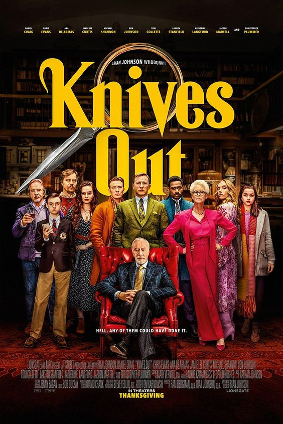

KNIVES OUT PLOT
Knives Out is a 2019 American mystery film written and directed by Rian Johnson. Daniel Craig leads an eleven-actor ensemble cast as Benoit Blanc, famed private detective summoned to investigate the death of bestselling author Harlan Thrombey (Christopher Plummer). When police rule Harlan's case a suicide, Blanc suspects foul play and examines a host of clues and dubious red herrings to ascertain his true manner of death. Johnson produced Knives Out with longtime collaborator Ram Bergman. Lionsgate managed the film's commercial distribution, and funding was sourced through MRC and a multimillion dollar tax subsidy from the Massachusetts state government.
CAST
Daniel Craig as Benoit Blanc
Chris Evans as Hugh Ransom Drysdale
Ana de Armas as Marta Cabrera
Jamie Lee Curtis as Linda Drysdale
Michael Shannon as Walt Thrombey
Don Johnson as Richard Drysdale
Toni Collette as Joni Thrombey
LaKeith Stanfield as Detective Lieutenant
Katherine Langford as Meg Thrombey
Jaeden Martell as Jacob Thrombey
Frank Oz as Alan Stevens
TRAILER